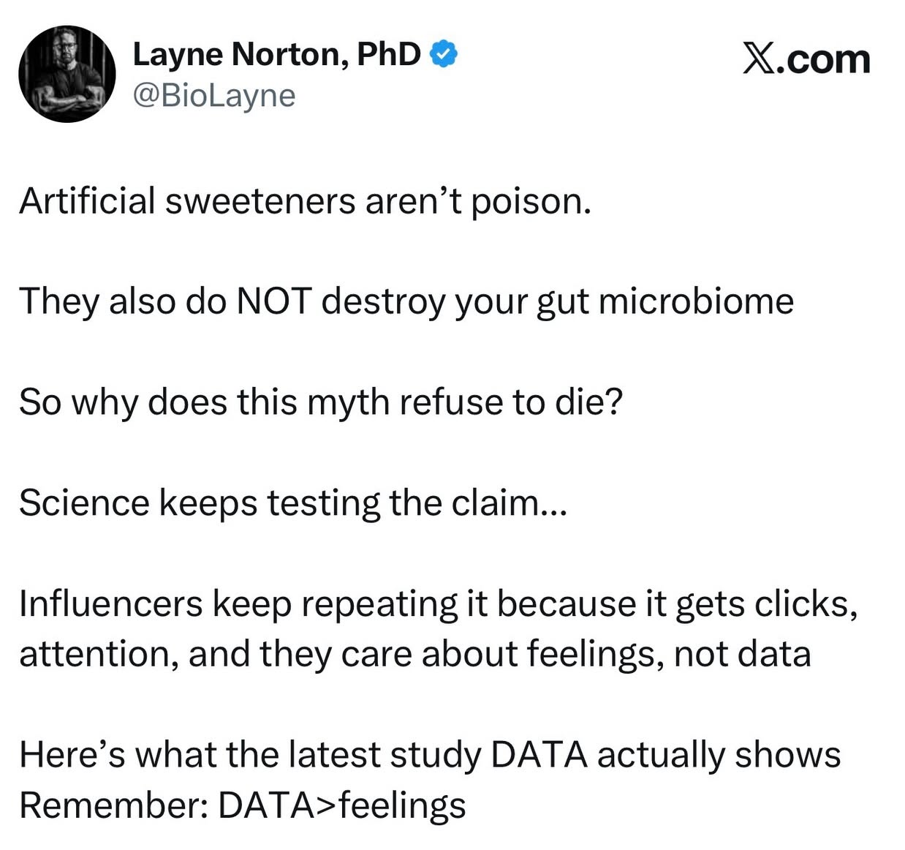
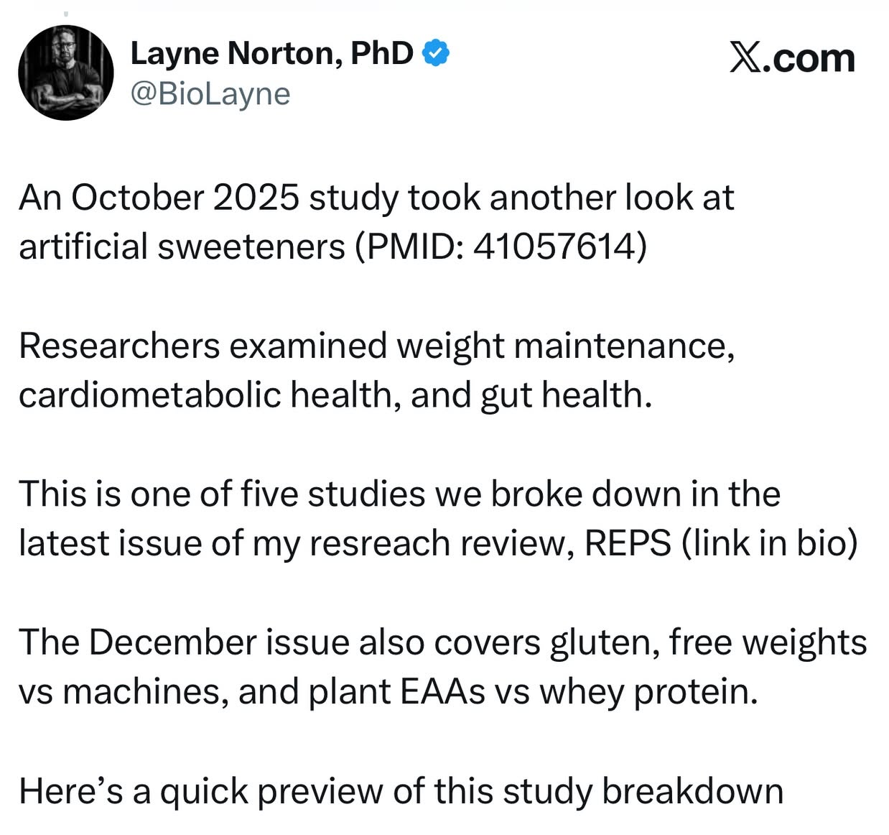
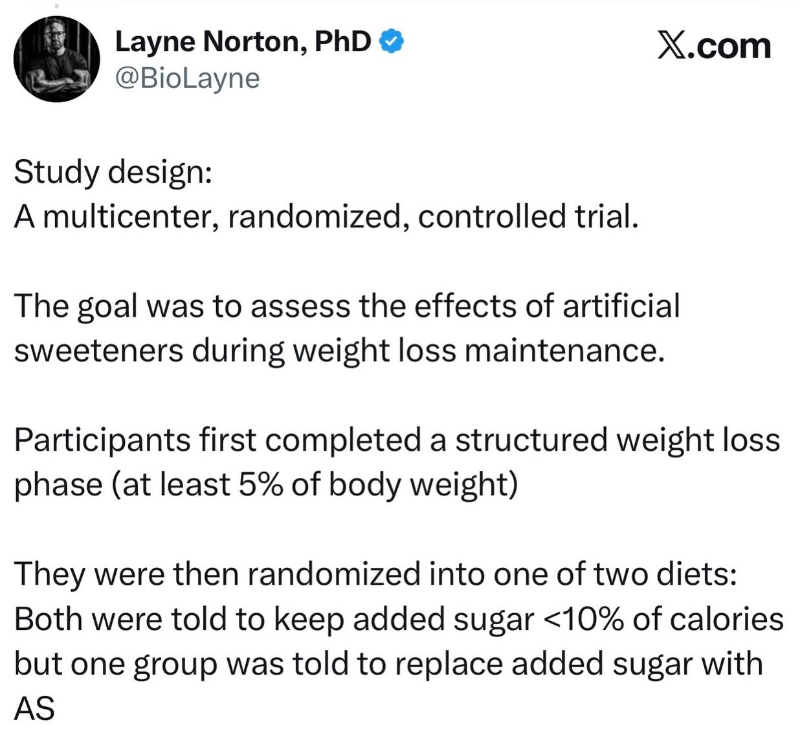
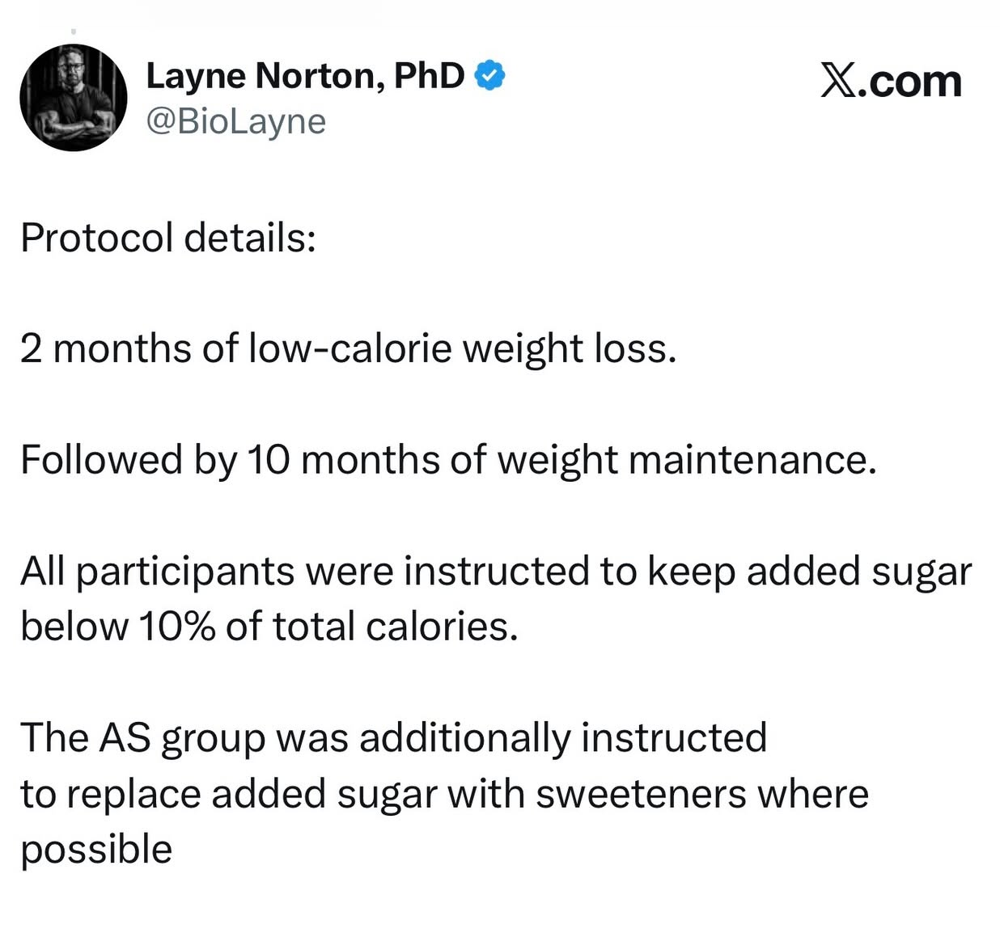
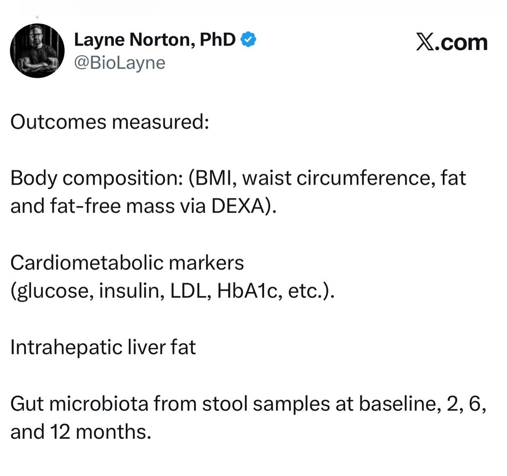

There is a lot of misinformation about artificial sweeteners online.
I am not recommending that people use them, but I do think it is important to be factually accurate about what the preponderance of evidence actually shows.
Louis shares Layne Norton's summary of a new long-term randomized trial of artificial sweeteners during weight-loss maintenance, which found better weight maintenance and no adverse cardiometabolic effects versus a low-sugar diet alone, with gut findings worth more study. Louis does not recommend sweeteners but wants the evidence stated accurately.
There is a lot of misinformation about artificial sweeteners online.
I am not recommending that people use them, but I do think it is important to be factually accurate about what the preponderance of evidence actually shows.
Artificial Sweeteners are NOT poison and do NOT ‘destroy your gut microbiome’ in fact they might make it BETTER
Artificial sweeteners get accused of being “toxic” every few months and lately are accused of “DESTROYING YOUR GUT”, usually without any new data to back it up.
Meanwhile, the research keeps moving forward.
A new long-term randomized controlled trial examined artificial sweeteners during weight loss maintenance, cardiometabolic health, liver fat, and gut microbiota and found better weight maintenance with artificial sweeteners and no adverse cardiometabolic effects compared to a low-sugar diet alone.
That doesn’t mean artificial sweeteners are magic. It means they’re a useful tool to help control calorie intake
The gut findings are interesting and worth further study, which is exactly how science is supposed to work — follow the data, not the narrative.
This is one of five studies we break down each month in REPS, where we focus on what the research actually shows and how to apply it in the real world.
If you’re tired of nutrition advice based on fear and vibes, REPS was built for you.





Louis counters a viral claim that non-sugar sweeteners mess with insulin, saying repeated human testing shows the claim is wrong for both artificial sweeteners like aspartame and natural ones like stevia. No specific studies are cited.

A study presented at ESC Congress 2026 analyzed 17,710 participants from CLSA and EPIC-Norfolk. Highest-quartile xylitol levels were associated with 57% higher MACE risk over six years in CLSA and 18% higher over 30 years in EPIC-Norfolk, with a dose-response pattern. It is observational and cannot show xylitol causes events.

A Fox News story reports that people with the highest blood xylitol levels had a 57% higher risk of cardiovascular events across 17,700 participants in two cohorts, with xylitol also possibly enhancing platelet clotting. Louis added only a hashtag; this duplicates an earlier xylitol post.
A short video post says aspartame is not recommended and that better alternatives exist, but that discussion should rest on what the totality of evidence actually shows. No data are given in the text.
Louis, who says there are better sweeteners, shares a quoted explainer that aspartame is not toxic: it is broken down in the gut into phenylalanine, aspartic acid and methanol, with exposures far below normal foods.
Louis, not promoting sweeteners, shares an umbrella review explaining why cohort studies show worse outcomes but RCTs show weight and glycemic benefits, attributing the gap to confounding and reverse causality.